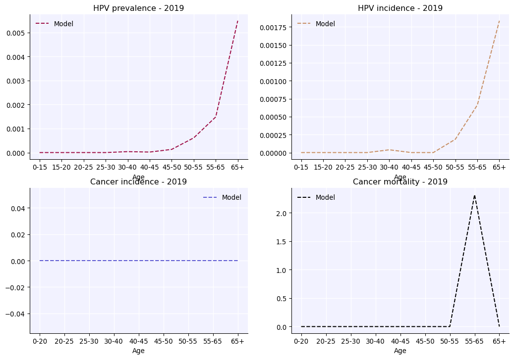

import numpy as np
import sciris as sc
import hpvsim as hpv
# Create some parameters, setting beta (per-contact transmission probability) higher
# to create more cancers for illutration
pars = dict(beta=0.5, n_agents=50e3, start=1970, n_years=50, dt=1., location='tanzania')
# Also set initial HPV prevalence to be high, again to generate more cancers
pars['init_hpv_prev'] = {
'age_brackets' : np.array([ 12, 17, 24, 34, 44, 64, 80, 150]),
'm' : np.array([ 0.0, 0.75, 0.9, 0.45, 0.1, 0.05, 0.005, 0]),
'f' : np.array([ 0.0, 0.75, 0.9, 0.45, 0.1, 0.05, 0.005, 0]),
}
# Create the age analyzers.
az1 = hpv.age_results(
result_args=sc.objdict(
hpv_prevalence=sc.objdict( # The keys of this dictionary are any results you want by age, and can be any key of sim.results
years=2019, # List the years that you want to generate results for
edges=np.array([0., 15., 20., 25., 30., 40., 45., 50., 55., 65., 100.]),
),
hpv_incidence=sc.objdict(
years=2019,
edges=np.array([0., 15., 20., 25., 30., 40., 45., 50., 55., 65., 100.]),
),
cancer_incidence=sc.objdict(
years=2019,
edges=np.array([0.,20.,25.,30.,40.,45.,50.,55.,65.,100.]),
),
cancer_mortality=sc.objdict(
years=2019,
edges=np.array([0., 20., 25., 30., 40., 45., 50., 55., 65., 100.]),
)
)
)
sim = hpv.Sim(pars, genotypes=[16, 18], analyzers=[az1])
sim.run()
a = sim.get_analyzer()
a.plot();HPVsim 2.2.6 (2026-04-17) — © 2023-2026 by the Gates Foundation
Loading location-specific demographic data for "tanzania"
Initializing sim with 50000 agents
Loading location-specific data for "tanzania"
Running 1970.0 ( 0/51) (1.04 s) ———————————————————— 2%
Running 1980.0 (10/51) (1.43 s) ••••———————————————— 22%
Running 1990.0 (20/51) (1.95 s) ••••••••———————————— 41%
Running 2000.0 (30/51) (2.65 s) ••••••••••••———————— 61%
Running 2010.0 (40/51) (3.58 s) ••••••••••••••••———— 80%
Running 2020.0 (50/51) (4.74 s) •••••••••••••••••••• 100%
Simulation summary:
7,019,083 total HPV infections
15,275 total cancers
12,941 total cancer deaths
2.02 mean HPV prevalence (%)
2.37 mean cancer incidence (per 100k)
68.50 mean age of infection (years)
60.83 mean age of cancer (years)
65.00 mean age of cancer death (years)
